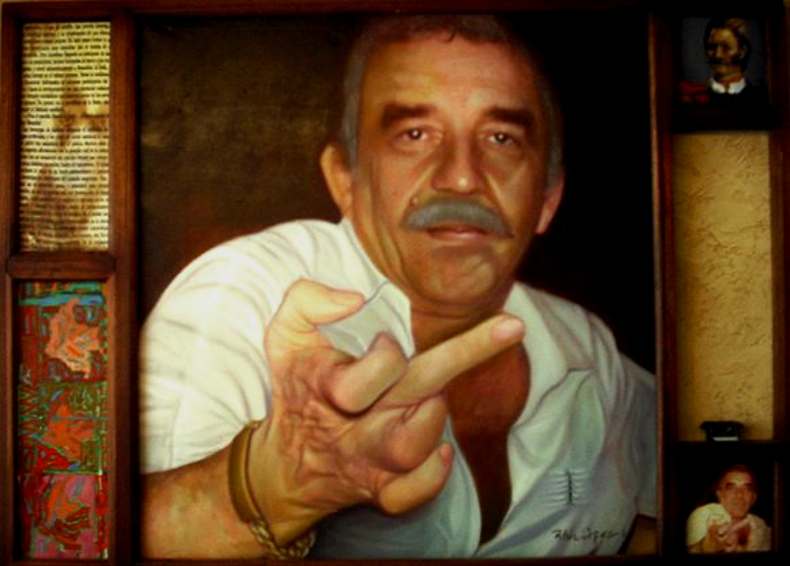

Exposición Contemporánea
Explorando el realismo y la irreverencia.

"La irreverencia del genio"
Homenaje a Gabriel García Márquez
Una pieza impactante que combina el retrato al óleo con texturas mixtas, capturando un gesto audaz, humano y alejado de la solemnidad tradicional del Nobel colombiano.

"Macondo en el óleo"
Estudio de texturas y color
Una exploración abstracta de los paisajes descritos en las novelas, aplicando espátula y colores vivos que evocan la calidez del Caribe de nuestro Nobel.